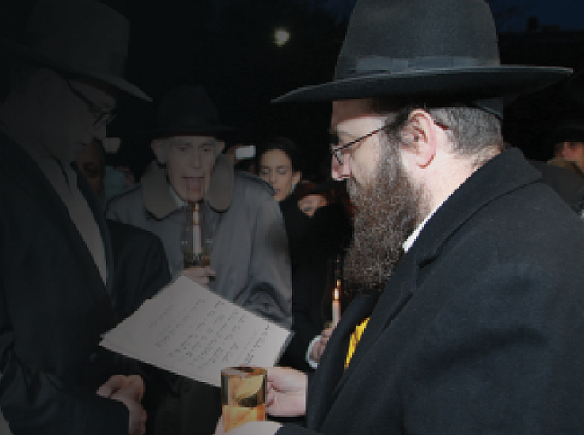

בהתוועדות מיוחדת שקיים הרבי במלאת חצי יובל לחתונתו, י”ד כסלו תשי”ד, גילה הרבי את
בהתוועדות מיוחדת שקיים הרבי במלאת חצי יובל לחתונתו, י”ד כסלו תשי”ד, גילה הרבי את מהותו של יום, שזהו “היום שבו קישרו אותי עמכם, ואתכם עמי”, והקדיש חלק גדול מהשיחה למנהגי חב”ד בחופה >> לרגל י”ד כסלו, פנינו למרא-דאתרא וחבר הבד”צ של שכונת קראון הייטס, הגאון החסיד הרב יוסף ישעי’ ברוין שליט”א, וביקשנו לשמ
בהתוועדות מיוחדת שקיים הרבי במלאת חצי יובל לחתונתו, י”ד כסלו תשי”ד, גילה הרבי את מהותו של יום, שזהו “היום שבו קישרו אותי עמכם, ואתכם עמי”, והקדיש חלק גדול מהשיחה למנהגי חב”ד בחופה >> לרגל י”ד כסלו, פנינו למרא-דאתרא וחבר הבד”צ של שכונת קראון הייטס, הגאון החסיד הרב יוסף ישעי’ ברוין שליט”א, וביקשנו לשמוע על מנהגי חב”ד במעמד המרגש של החופה – אילו מנהגים ייחודיים לחב”ד, ואילו מנהגים שנוהגים בעולם ולא נוהגים בחב”ד, וגם – אילו מנהגים שהתחלפו דווקא בדור השביעי? >> מדוע חשוב להפגש עם הרב כמה שבועות לפני החתונה, אילו בעיות עלולות להווצר בשעת החופה, וכיצד מתמודד הרב עם סידור החופה לפי כל כללי ההלכה, ביום הכי מתוח רגשית לבני הזוג? >> מרתק

הרב יוסף ישעי’ ברוין, מרא דאתרא וחבר הבד”צ של קראון הייטס, החל לצבור את הניסיון הרבני כבר בכהונתו כרב קהילת ‘צמח צדק’ בסידני, אבל בזכות ריבוי החופות שערך בשבע השנים מאז הוכתר לחבר הבד”צ של קראון הייטס, הוא צבר ניסיון שלא מבייש רבנים זקנים וותיקים… כאשר מצרפים לכך את בקיאותו המדהימה בכל ספרי ההלכה והפוסקים, לצד ידע מקיף במנהגי חב”ד ובשיחותיו של הרבי - הראיון איתו, הופך לשעה של הנאה רוחנית צרופה, וכולי תקווה שאצליח להעביר לקוראי העיתון ניחוחות מחווייה ייחודית זו.
לקראת י”ד כסלו, יום הנישואין של הרבי מלך המשיח והרבנית חי’ מושקא, היום עליו התבטא הרבי כי זהו “היום שבו קישרו אותי עמכם, ואתכם עמי”, והקדיש חלק גדול מהשיחה להדגשת מנהגי חב”ד בחופה - ישבנו לשיחה מרתקת עם הרב ברוין, על מנהגים ייחודיים לחסידי חב”ד, מנהגי העולם שאינם נהוגים בחב”ד ועוד שלל סוגיות מרתקות שבאות לפתחם של רבנים מסדרי קידושין.
מקורם הנעלה של המנהגים
לפני שנתייחס למנהגי החתונה החב”דיים, אבקש להבין מה החשיבות של המנהגים בכלל, ומנהגי החתונה בפרט?
הקביעה ש”מנהג ישראל תורה הוא” נאמרה על ידי הראשונים לפני מאות שנים, ומוכרת בכל תפוצות ישראל, אבל בדור האחרון זכינו והרבי גילה לנו עד כמה גבוה מקורו של המנהג.
אם בכל השנים פירשו את הפתגם שגם מנהג תורה הוא - היינו, שההלכות הן העיקר, ו’גם’ למנהג יש חשיבות, ועד שאפשר לקראו גם כן בשם ‘תורה’,
- גילה לנו הרבי את הפירוש הפנימי, שיש במנהג ‘תורה’ מלשון הוראה, זאת אומרת, שדוקא המנהג מורה ומגלה את מהותה הפנימית של המצווה. קח למשל את אחרון של פסח: מהלכות החג, או מקריאת התורה של החג, לא נוכל להבין את המהות הפנימית של החג. מהיכן אנו למדים את מהותו של החג? דווקא המנהג לאכול שרויה בכל מאכל ומאכל מגלה (כפי שמוסבר בשיחות של הרבי) כי אחרון של פסח קשור במהותו לגאולה השלימה, בה הרע עצמו יתהפך לטוב, ולכן מהדרים באכילת מצה שרויה, שכן הבחינה והחשש שבמצה שרויה נהפך לטוב ולקדושה, וניתן לנצלו בעבודת הבורא.
אם הדברים אמורים לגבי כל מנהג שנהגו ישראל, ועד לדברי הרשב”א שאין לבטל מנהג של נשים זקנות בישראל - על אחת כמה וכמה כאשר מדובר במנהגי חב”ד, עליהם נאמרו דברים נפלאים: על מנהגי הבעל–שם–טוב בכלל, אמר אדמו”ר הזקן שהם “הלכה למשה מסיני”, אדמו”ר הריי”צ אמר כי “מנהגי ליובאוויטש מיוסדים לא רק על הלכה או על הידור מצווה, אלא גם על ענינים רוחניים הנוגעים בנפש. הם מעמידים את הלך הרוח הכללי של יהודי על בסיס של עבודה, שהוא ובני ביתו מוארים ברוח הטהרה שהמנהגים מביאים איתם”, ועד שרבותינו מסרו נפשם כדי להנחיל את מנהגיהם לכלל ישראל, ו”עם מנהגים אלו יקבלו היהודים את משיח צדקנו”.
ואכן, כמה פעמים רואים, אחרי עיון במקורות, שבנוסף לטעם החיצוני וה’טכני’ של המנהג - יש מימדים פנימיים ושורשיים. רואים את הנקודה הזאת דוקא בטקס החופה: ההנהגה לקרוא את הכתובה בחופה אחרי ברכת אירוסין (המעוגנת בנימוקים הלכתיים ולא מנהג גרידא), נבעה במקור מהצורך ליצור ‘הפסק’ בין הקידושין לנישואין. אבל, זהו רק פן חיצוני. ב’הגהות מיימוניות’ משתמש בביטוי “מנהג אבתינו תורה היא” בעניין זה. ובאמת, מצינו בספרים שמעמד קריאת הכתובה דומה לשמיעת עשרת הדברות בשעת מתן תורה, ולא רק אילוץ טכני.
נוסף על כך, כאשר מדובר במנהג של רבותינו נשיאינו, הרי זה הופך להיות חלק מההתקשרות, לנהוג כמו הרבי. וכידוע שכאשר הגה”ח ר’ שלמה יוסף זווין ערער על אנ”ש שנהגו להגביה התורה כנהוג אצל הרבי, בשונה ממה שהיה מקובל אז בבית כנסת חב”ד בירושלים - הרבי כתב לו שיניח להם מכיוון שזהו עניין של התקשרות. וכפי שהרבי כתב פעם (בנוגע לעניין אחר): “מצד גודל ערך ההתקשרות נחיצותה וחביבותה הרי עלינו כולנו להתאזר ולהתאמץ ביותר לאחוז בהוראות רבותינו נשיאי חב”ד מנהגיהם ותנועותיהם השייכים לנו”.
חביבות וחשיבות מיוחדת למנהגי החתונה, שהרבי גילה לנו באותה התוועדות מיוחדת שקיים בי”ד כסלו תשי”ד, בה התבטא הרבי על הקשר בינו לבין החסידים: “זהו היום שקשרו אותי עמכם ואתכם עמי, אני אייגע אתכם ואתם תייגעו אותי, וביחד נתייגע לגאולה האמיתית והשלימה. שהקב”ה יעזור שנראה פרי טוב בעמלינו”.
הרבי עצמו גילה חביבות יתירה למנהגים שגילה באותה התוועדות, והגיה חלק מהשיחה לפרסום בהקדמת ספר המנהגים. בשנים האחרונות מצאו בספריית אגו”ח הגהות נוספות על שיחה זו.
מדוע בחב”ד החתן לא לוקח ‘פתקאות’, ומי כן יכול לברך?
ידוע שבתורה יש מצוות המובנות על פי טעם ודעת, ויש כאלה שבבחינת ‘חוקים’. האם לכל המנהגים יש הסברים וסיבות, או שזהו המנהג ואין רשות להרהר אחריו?
הרבי הריי”צ אמר פעם שבמנהגי ליובאוויטש יש שלושה אופנים: א. מנהגים שטעמיהם ידועים. ב. מנהגים שלא ידוע טעמם, וג. מנהגים שרק יחידים מבית רבי היו נוהגים בהם. מעניין, שבשיחת י”ד כסלו תשי”ד, המנהג הראשון שהרבי מציין, בנוגע לנוסח ההזמנה, והמנהג האחרון שהרבי מדבר אודותיו, בקשר לכף כסף שמניחים בכניסה לחדר ייחוד - שניהם מנהגים שלא ראיתי עליהם טעם והסבר. אגב, המנהג להניח כף כסף הוא ייחודי לחב”ד, ולא ידוע לי על אף חוג אחר שנוהג בזה. גם נוסח ההזמנה הוא כמובן ייחודי לחסידי חב”ד.
ראוי לציין, שבנוסח ההזמנה כתוב שהחופה תתקיים “בשעה החמישית”, והרבי מדגיש שלמרות שהחופה עצמה התקיימה מאוחר יותר - הרי דייקו שה’קבלת–פנים’ תתחיל בשעה החמישית. יש הטוענים שקבלת פנים נחשבת ל’חופת חתן’, ולכן כאשר הקבלת פנים מתחילה בשעה החמישית, זה נחשב שהחופה נערכה בשעה זו.
יש מנהגים שמאתגרים מבחינה הלכתית. כך למשל לגבי המנהג שהרבי הביאו, שהחתן מתחיל לענוד את הטבעת על אצבע הכלה באמירת התיבות “הרי את”, ולאמירת התיבה האחרונה, “וישראל”, מסיים ענידת הטבעת היטב, ומסיר את ידו, שבזה יוצאת הטבעת מרשותו ונעשית שלה:
בשאר החוגים, רובם מקפידים שהחתן יסיים את כל המשפט, ורק לאחר מכן יענוד את הטבעת על אצבעה של הכלה, מכיוון שאם נותן את הטבעת ואחר–כך אומר “הרי את מקודשת”, זה נחשב אמירה לאחר מתן מעות, שיש טוענים שזה יכול ליצור בעייה בקידושין… יש אפילו רבנים, משאר חוגים, שאוחזים בידו של החתן כדי לוודא שלא יניח את הטבעת לפני סיום האמירה. בחב”ד, בגלל שמנהגנו שהחתן מתחיל לענוד את הטבעת תוך כדי אמירת “הרי את” - ויצויין שיש תקדימים הלכתיים במקורות לנהוג דוקא כמנהגנו - צריכים להזהיר את החתן ולהסבירו היטב, שלא יעזוב את הטבעת לפני סיום האמירה, כדי שלא להכנס לבעיות עם הקידושין.
גם האצבע עליה עונד החתן את הטבעת, שנוי במחלוקת. יש דעות, בפרט בין המקובלים, שעל החתן לענוד את הטבעת על האצבע האמצעית, הארוכה מכל האצבעות הנקראת ‘אמה’. היו קהילות בודדים שהחתן היה עונד את הטבעת על האצבע הקטנה האחרונה הנקראת ‘זרת’. בחב”ד, וברוב הקהילות, נוהגים לענוד על האצבע השניה, הסמוכה לאגודל. בספרים מובאים כמה טעמים על כך. יש אומרים שפעם היה מקובל שהנשים עונדות את טבעותיהן דוקא באצבע זו. טעם אחר ניתן למנהג, כי כאשר מתחילים למנות באצבעות את המילים בפסוקים “תורת ה’ תמימה” והלאה, ומתחילים את המילה הראשונה באגודל - הרי תמיד המילה השניה תהיה שם ה’, ולכן נתקדשה האצבע השניה. יש בכך גם רמז ששם השם שורה על הבית היהודי, המבוססת אך ורק על “תורת ה’”, “עדות ה’”, “פיקודי ה’”, וכולי.
מעניין, שבסדר זה נופל שם ה’ חמשה פעמים על האצבע השניה, ובפעם השישית נופלת שם המילה ‘זהב’. הרבי מביא זאת כטעם למנהג אחר שאנו מקפידים עליו - לקדש בטבעת זהב דווקא.
ומידי דברנו, במנהג חב”ד שהטבעת עשויה זהב דווקא - מעניין לציין שכאשר הרבי שלח לאביו את תיאור החתונה, וציין שהטבעת הייתה עשויה זהב, התפלא הרה”ק רבי לוי יצחק, וכתב: “מה שכתבת שהקדושין היו בטבעת של זהב, לפלא אצלי מעט הדבר, הלא מנהג העולם להקפיד בשל כסף דוקא (וכן הוא עפ”י סוד, כמדומה, שהקדושין הוא ע”י חסדים שעליהם מורה ענין כסף . . ואם כי יש להעמיד על פי הסוד גם כן ענין זהב, עם כל זה אינו מובן לי הדבר). אם לא קשה לך שאול את חותנך בשמי על–דבר–זה, והשיבני”.
לא ידוע לנו האם הרבי שאל את הרבי הריי”צ לטעם הדבר, אבל כאשר הרבי סיפר על כך בי”ד כסלו תשי”ד, ציין הרבי ש”לכאורה היתה הטבעת צריכה להיות מכסף, מצד כמה טעמים: א) לשון המשנה הוא בכסף ובשוה כסף, ב) גם על פי קבלה יש מקום לכך שהטבעת תהי’ של כסף, ג) נישואין הוא הרי ענין של אהבה . . אבל לפועל היתה טבעת של זהב. טעמים יאמר כל אחד כפי רצונו, אבל [לפועל] כך הי’ - הרבי הי’ מתבטא, “כך שמעתי”“.
ועוד אמר הרבי בשיחה זו:
“הטבעת היתה חלקה, כלומר, לא היה חרוט עליה מאומה. הרבי [הריי”צ] דייק ששום דבר לא יהיה בשעת הנישואין, הוא הורה לגרד אף את ה”פראבע” - החותם הממשלתי המעיד על טיב הזהב וכמותו”.
מנהג יחודי לחב”ד הוא זמן כתיבת הכתובה. אמנם, יש מערערים על כך שחותמים הכתובה מבעוד יום, אף שהחופה מתקיימת לפעמים בלילה, אבל הרבי מסביר מדוע להלכה אין בזה שום חשש.
יש מנהג מעניין, שמקובל מאוד אצל חסידי פולין, שנותנים לחתן פתקאות לבקשת ברכה, שהרי עוונותיו של החתן נמחלים ביום זה, ויש לו כוחות מיוחדים.
בחב”ד, אבל, זה לא נהוג. מדוע? הרבי התייחס לכך (ב’ אלול תשי”ג), ואמר שלמרות הכל אין ענין להתנהג כך, כיון שהנהגה כזו יכולה להביא לידי ישות.
לאידך, אומר הרבי, אלו שבאים לשמח את החתן בכוחם לבקש, ובהתאם לכך - אמר הרבי - יש לחשוב ולכוון ולבקש עבור הבחורים שצריכים שידוכים.
מנהג ששונה בדור השביעי
למרות כל מה שהרבי מאריך על החשיבות בקיום מנהגי החתונה, כמו שהיה בחתונתו - בנוגע ל’תנאים’ אנו לא נוהגים היום כפי שהרבי נהג. התנאים של הרבי נחתמו, כפי שפורסם בשנים האחרונות, בו’ כסלו. זאת אומרת, כמה ימים קודם החתונה. ואילו המנהג כיום הוא לחתום את התנאים סמוך לחופה. מדוע?
אומרים בשם מזכירו של הרבי, הרה”ח ר’ יהודה לייב גרונר, שבשנים הראשונות נהגו אנ”ש והתמימים לערוך ‘תנאים’ כרגיל, לפני החתונה. אולם בסביבות שנת תשי”ד–ט”ו, היה מישהו ששאל אצל הרבי, ונענה (כמדומה בשם הרבי הריי”צ) שטוב יותר וכדאי שלא לערוך ‘תנאים’, אלא רק ווארט עם קניין. ואמר הרבי הטעם לזה, שבאם חס ושלום מאיזה סיבה שהיא, אחד הצדדים ירצה לבטל את השידוך, זה פחות חמור מאשר אם יעשו שטר תנאים וחתימת עדים וכו’. הרבי הורה אז, שאת התנאים יערכו בסמיכות לחופה. כנראה שמקבל המענה פרסם את הדברים בשעתו, וזה גרם לשינוי המנהג.
לאחר שנדפסה סידרת אגרות הקודש של הרבי, התגלה שכבר בשנת תשי”ג כתב הרבי לאחד שכתב שבדעתו לכתוב תנאים ביום החתונה - ש”אין מקום לספק, ונכון לעשות כן, וגם התנאים יהיו בשעה טובה ומוצלחת”.
לאידך, כמה שנים אחר–כך, בתשי”ז, במענה לאחר ששאל אם לעשות תנאים או קניין - השיב הרבי ש”אין בזה נפקא–מינא כל–כך, וישאל למנהג אנ”ש במקומו עתה בזמן האחרון, וכן יעשה”.
לפועל, נראה שבאותן שנים השתנה המנהג החב”די, בוודאי בהכוונתו של הרבי, והפסיקו לכתוב את התנאים מיד כאשר סגרו את השידוך, ודחו את זה ליום החופה.
אגב, בנושא הזה, גם בחוגים אחרים שינו את המנהג, ודחו את כתיבת התנאים ליום החתונה. כנראה שהשינוי נבע מהמצב שלאחרי מלחמת העולם השניה, נהיה דור תהפוכות, ואירעו יותר מידי מקרים של ביטול שידוכים, וכדי שלא להעמיד את המשודכים במצבים חמורים - העדיפו לדחות את ההתחייבות הזאת לרגע האחרון.
בהקשר זה, ראוי לציין למה שהבעל שם טוב אומר, ששבירת שידוך חמור יותר מגט, כיוון שלאחר קידושין - יש תקנה מהתורה לתת גט. אבל לאחר תנאים, אין תקנה… מסיבה זו, הסביר הבעל–שם–טוב, שוברים בחופה כלי זכוכית, שיש להם תקנה, ואילו ב’תנאים’ שוברים כלי חרס, שאין להם תקנה…
הדחייה הזאת של התנאים מעוררת אתגר הלכתי מעניין, כיוון שזה מאוד מוזר לכתוב ששני הצדדים מתחייבים לכך וכך, כאשר הרבה מההתחייבויות המופיעות בשטר כבר התקיימו, ועומדים כבר ערוכים לקראת החופה, והכל מוכן ומזומן… באמת, הרה”ג ר’ משה פיינשטיין כתב נוסח חדש, שכתוב בלשון עבר, כדי שיתאים למציאות הנוכחית. אבל אצלנו, וגם בחוגים אחרים, כותבים עדיין בנוסח הישן, למרות שהכל נכתב ביום החתונה.
אגב, נוסח התנאים שלנו, בנוי באופן כללי על נוסח התנאים (יותר נכון: נוסח ‘ראשי–פרקים’) של הרבי הרש”ב, עליו חתום אדמו”ר הצמח–צדק. מסופר, שבתנאים של הרב חיים צימענט שהתקיימו בבוסטון, בהשתתפות הגרי”ד סולובייצ’יק, העיר הרב סולובייצ’יק על פרטים מסויימים בנוסח התנאים, ולאחר שהחתן כתב על כך לרבי, נענה ש”נכון הדבר שזהו הנוסח מכ”ק אדמו”ר הצמח–צדק” והרבי מעיד שם שיש תחת ידו צילום מהתנאים הללו, שהצמח–צדק אף הוסיף בגוף כתב יד קודשו.
למרות שבאופן כללי נצמדים לנוסח של הצמח–צדק, יש שינויים קלים הכרחיים. אחד השינויים הוא, שבנוסח המקורי כתוב ששני הצדדים החליטו שהחופה תתקיים בירושלים עיה”ק. בדרך כלל כאשר מזכירים את הנוסח הזה, מביאים זאת כהוכחה עד כמה יהודים בכל הדורות ציפו לגאולה. אין ספק שיהודים ציפו לגאולה, אבל בפשטות הנוסח הזה נכתב כך, משום שבזמנם היו משתדכים זמן רב לפני החתונה, וכאשר שני הצדדים כתבו את התנאים (וכאמור, בזמנם היו כותבים את התנאים מיד לאחר השידוך) - הם עדיין לא ידעו היכן תתקיים החתונה.
לדוגמא, בשטר התנאים של הרבי הרש”ב. השידוך נעשה כאשר הרבי הרש”ב היה בגיל 4, עשר שנים לפני החתונה. בתנאי החיים של השנים ההן, אנשים לא ידעו מה יהיה איתם בעוד עשר שנים, ובוודאי שלא יכולים לכתוב היכן בדיוק תתקיים החתונה. לכן בחרו בנוסח זה, שגם פותר את הבעייה, וגם מבטא את האמונה בביאת המשיח. מסופר שהרבי מהר”ש, בניגוד לעמדת המחותן שלו, מאוד רצה שהחתונה תהיה בליובאוויטש, באומרו אם לא ירושלים, לפחות בליובאוויטש…
לעומת זאת, בשטר התנאים של הרבי, כתוב ברור ש”החתונה תהי’ איה”ש בחדש כסלו תרפ”ט בעי”ת ווארשא יע”א ביום ג’ י”ד ימים לחדש הנ”ל”. נוסח דומה מופיע גם בתנאים של הרבי הריי”צ, שנכתבו זמן רב לפני החתונה, ובאמת כתבו רק שתהיה “בקיץ שנת ה’תרנ”ז”. גם בחתונתה של הרבנית שיינא, בתו הצעירה של הרבי הריי”צ נכתב מקום החתונה, והרבי הסביר שלא כתבו שמקום החתונה יהי’ “בירושלים תובב”א” - מפני “שכבר הותנה המקום”, זאת אומרת שבשעת כתיבת התנאים ידעו היכן תהיה החתונה. על אחת כמה וכמה בשטרי התנאים בימינו, שנכתבים בסמיכות ממש לחופה - איך אפשר לכתוב שהחתונה תהיה בירושלים תובב”א, כאשר יושבים כבר באולם החתונה, בברוקלין?
נכון שמצד האמונה בביאת המשיח, אנו מאמינים באמונה שלימה שמשיח יבוא בכל רגע, וכפי שהרבי אומר שתוך פחות מכדי הילוך מיל יכולים להיות כבר כהנים בעבודתם בבית המקדש השלישי - אבל שטר התנאים הוא שטר ממוני שאמור לכתוב את המציאות העכשווית, וכאמור, גם בשטר התנאים של הרבי והרבנית, וכן של אחותה הרבנית שיינא - מכיוון שנכתבו כאשר ידוע היכן תהיה החופה, שינו מהנוסח הקודם, וכתבו מפורש היכן ומתי תתקיים החופה.
מה החלק הכי חשוב בחתונה?
שיחתנו מתארכת, וגולשת קצת מעבר למנהגי חב”ד - אל האחריות הגדולה הנלווית לתפקיד הרבנים בעריכת החופה. הרב ברוין מבקש לנצל את ההזדמנות כדי לעורר את החתנים והכלות הפוטנציאלים, ואת הוריהם, על הצורך להקדים ולקבוע פגישה עם הרב מיד לאחר השידוך:
בפגישה הראשונה עם החתן והכלה הטריים, חשוב להבהיר להם שטקס החופה והקידושין הוא הדבר הכי עיקרי בכל החתונה. זה נשמע טריוויאלי, אבל לצערנו יש הרבה זוגות שמיד לאחר השידוך ממהרים לקבוע פגישה עם בעלי האולם, עם הצלמים, עם הקייטרינג ושאר בעלי המקצועות, ואילו את הפגישה עם הרב הם משאירים לבסוף. היו פעמים שזוגות נזכרו להתקשר כמה ימים לפני החתונה, ואפילו ביום החופה… פתאום הם נזכרו שאין להם רב שיסדר קידושין…
אנשים צריכים להבין, שאם הצלם יעשה טעות, זה יכול להיות מביך, אולי אפילו מעצבן, אבל אחרי כמה ימים/שבועות זה יישכח ויעבור. אפילו אם האוכל בחתונה יהיה מקולקל, זה יחלוף כעבור יום–יומיים. אבל אם חלילה הרב יעשה טעות, בגלל שהגיעו אליו ברגע האחרון ולא היה לו זמן לבדוק את השמות, קירבת משפחה של העדים ועוד פרטים כיוצא בזה - הרי זו תהיה בכייה לדורות!
תפקידו של הרב הוא, קודם כל לוודא שהחתן והכלה מותרים להנשא זה לזו. אחר–כך לנהל את תהליך הקידושין באופן מדוייק לפי ההלכה. יש בזה המון פרטים, ופרטי פרטים, ולפעמים הדברים דורשים בירור מעמיק שאי אפשר לעשותו תחת לחץ של זמן. בכתיבת השמות יש כל כך הרבה פרטים וחלק גדול מהשולחן ערוך וספרות השו”ת מוקדש לנושא הזה. על הרב להקדיש הרבה זמן לברר את אופן הכתיבה המתאים על פי ההלכה, בהתאם לאופן ביטוי השם, וכללי ההלכה. כאן אין קיצורי דרך. שמעתי על מישהו שלא ידע איך לכתוב את השם, והחליט לנקד אותו…
כאשר מדובר במשפחה רגילה מאנ”ש, בדרך כלל לא אמורה להיות בעייה של יוחסין או פסולי חיתון (אם כי גם בזה יש הפתעות לפעמים). אבל כאשר מדובר בבעלי תשובה, שהוריהם לא שמרו תורה ומצוות - מוכרחים לחקור ולוודא. בדרך כלל אני מבקש את הכתובה של ההורים. היה מקרה, שאחד מהצדדים נולד מזיווג שני, ולא הצליח להשיג את תעודת הגירושין מהנישואין הראשונים, רק את הכתובה מהזיווג שני. הם טענו, שהכתובה עצמה שנכתבה על ידי רב חשוב מספיקה בתור הוכחה שהאמא התגרשה כהלכה. התעקשתי שחייבים תעודת גירושין דוקא.
לאחר שראיתי את הכתובה, שהיו בה כמה טעויות מביכות, הבנתי כמה אי אפשר לסמוך על הכתובה הזאת. בתחילה הם טענו שבלתי אפשרי להשיג את אישור הגירושין, ובינתיים החופה מתקרבת בצעדי ענק. הגיע יום החופה, ואם הם לא היו משיגים את המסמך, לא הייתי יכול לאשר את החופה. בנס, הם הצליחו להשיג רב שהיה לו גישה לארכיון מסויים מעבר לים, ושעות ספורות לפני החופה השיגו את המסמך המיוחל…
פעם הגיע אלינו מקרה, שאחד הצדדים שנולד מזיווג שני, גילה שאמו לא התגרשה מבעלה בזיווג ראשון, זאת אומרת שעל פניו מדובר במקרה של ממזרות ר”ל. במקרים כאלה, חוקרים ודורשים היטב אחר הקידושין הראשונים, שלעיתים לא נעשו כדת וכדין, וממילא האשה לא הייתה נחשבת כנשואה בנישואין הראשונים, ואין כאן ממזרות. במקרה ההוא בא לעזרתנו סרט ווידאו מהחתונה הראשונה, ממנו הוכח כי טקס החופה והקידושין לא התנהל בהתאם להלכה, מכמה וכמה סיבות. כמובן שבמקרים כאלה, איננו סומכים על עצמנו, אלא שולחים את פרטי הדברים לגדולי מורי ההוראה, ורק לאחר שגם הם סמכו את ידיהם על הקביעה, פסקנו להתיר.
נקודה נוספת, שחובה להערך אליה בזמן, היא, מי יהיו העדים בחופה. בדרך כלל, רוב הנוכחים בחופה הם קרובי משפחה, שפסולים לעדות… שמעתי על רב מסויים, שהיו לו עדים קבועים, שהוא לקח איתו לכל חופה. זה רעיון מצויין מבחינה הלכתית, אבל כמובן שלא מעשי לכל אחד. בדרך כלל, הצדדים מציעים חברים או ידידים שיהיו עדים, וצריכים לוודא שהם כשרים להעיד.
כרבנים חסידי חב”ד ההולכים לפי פסקי אדמו”ר הצמח–צדק, הרי יהודי שמגלח את זקנו, אפילו ללא מכונת גילוח, עובר על איסור מן התורה. ולכן לא נשתמש בשכזה בתור עד. בדיעבד יש מספיק נימוקים לאשר את העדות לאחר מעשה, אבל לכתחילה בוודאי צריכים לוודא שהעדים המיועדים יהיו עם זקן מלא.
בדור יתום זה, יש מקרים שחלק מקרובי המשפחה הם במצב כזה שאסור להעניק להם כיבוד, אבל מצד דרכי שלום צריכים לכבד אותם… צריכים לדעת היטב את ההלכות, כדי למצוא פתרונות יצירתיים, שגם יתנו להם הרגשה טובה, וגם לא יהיו על חשבון הקפדה על קוצו של יוד. דוגמא מעניינת לכבוד שאינו כיבוד הלכתי, הוא כאשר האבא גוי, והוא מבקש להיות נוכח בחופה ומצפה להיות שותף. נותנים לו, למשל, את הכבוד להחזיק את הטבעת… הוא מרגיש טוב עם זה, ולאידך - אין לזה שום משמעות הלכתית.
‘מנהג’ חדש: השליח מסדר קידושין…
ריבוי הפרטים ופרטי הפרטים שבניהול החופה, שעל כולם צריך הרב להשגיח שיתנהלו בדיוק לפי דרישות ההלכה - מעורר בעייה נוספת, כאשר אנשים בעלי מעמד חשוב ומכובד, סבורים שדי במעמדם כדי לאפשר להם לערוך חופות. זה קורה בעולם הליטאי, בו נהוג להזמין את ראש הישיבה לסדר קידושין, ולאחרונה גם בין חסידי חב”ד, יש שמבקשים מהשליח שקירב אותם - לערוך את החופה. כאשר יש רב מומחה שמסדר את כל הפרטים החשובים, והראש ישיבה או השליח רק מנהלים את הטקס, זה עוד יכול לעבור, אבל כאשר הם מנהלים הכל מהחל ועד כלה, בלי הידע המתאים - זה פתח לבעיות…
הרב ברוין נשמע כאוב מאוד כשהוא מדבר על הבעייה הזאת, שלדבריו נובעת מחוסר מודעות לתקנות הלכתיות של הקדמונים, שכבר קבעו שרק הרבנים מארי–דאתרא מוסמכים לערוך חופות וקידושין.
מבחינה היסטורית סידור הקידושין היה תמיד בידיים של הרב המקומי. הראשונים, עוד בזמנו של רבינו תם, קבעו להלכה שלמרות שמעיקר הדין כל אחד יכול לערוך חופה וקידושין - הרי לאחר שראו את המכשלות שיוצאות מכאלה קידושין, קבעו בתקנות הקהילות, שרק הרב המקומי מוסמך לערוך את החופה, ומי שיפר תקנה זו - יוטלו עליו עונשים חמורים של הרחקה מהקהילה וכו’. בפוסקים מובא שכל “הקרואים לסעודת מריעות” מהווים חלק מהבעיה, ואף עליהם נאמרו דברים חריפים. רק אחרי מלחמת העולם התחילה התופעה לצבור תאוצה, שאדמורי”ם וראשי ישיבות חייבים להיות המסדרי קידושין.
כתוב שמי שלא יודע בטיב גיטין וקידושין ועוסק בהן, הוא יותר גרוע מדור המבול. הראשונים מסבירים שלמרות שגם בדור המבול חטאו בעריות, הרי הם לא ידעו ואילו כאן מדובר בתלמידי חכמים (ובמצב של היום - ראשי ישיבות!), ולכן זה הרבה יותר גרוע. בפוסקים מובא גם שיש בכך משום השגת–גבול של הרב המקומי, אבל עיקר הבעייה היא שמי שלא צבר ניסיון ומומחיות בנושא - עלול בקלות לטעות באחד או בכמה מפרטי הפרטים המרכיבים את תהליך החופה, ולהעמיד בסכנה את הקידושין של הזוג הצעיר.
מגיעים אלינו לבית הדין אנשים עם כתובות שנערכו על ידי ראשי ישיבות, או שלוחים מכובדים, שעם כל הכבוד לפעילותם הברוכה - אין להם את הניסיון הדרוש, ולעיתים אנחנו נחרדים מהבעיות שנמצאות בכתובות… כבר קרה כמה פעמים שהוצרכנו לכתוב ‘כתובה דאשתכח בה טעותא’ אחרי שנמצאו פגמים חמורים בכתובה שנכתבה על ידי שליח שלא הכיר את ההלכה. פעם שלח המרא דאתרא וחבר הבד”צ הרב אהרן יעקב שוויי עותק כתובה לשליח מסויים. אחרי שהשליח מצא כביכול ‘טעות’ בכתובה - הוא ראה שמופיע בכתובה פעמיים אותו סכום כסף (“מאה זקוקים כסף צרוף”), דבר הנדרש לפי ההלכה (לנדוניא ולתוספת כתובה) - הוא הזדעזע כל כך ואמר בתוקף לאותו אחד שאסור לו לערוך חופה וקידושין בשום מקום בעולם!
הדרכה מוקדמת מונעת אי-הבנה
היום הכי רגיש בחייו של אדם, הוא יום חתונתו. זהו יום מורכב, ששמחה גדולה ולחץ אטומי משמשים בו בערבובייה. בתוך כל הקלחת הזאת, מגיע הרב לנהל את המעמד הכי חשוב, שחייב להיות מדוייק לפרטי פרטים. איך עושים את זה, בלי לפגוע בטעות ברגשותיו של אחד הצדדים?
הדבר הכי חשוב שרב צריך להקפיד עליו, כדי להמנע מפגיעות וחיכוכים כאלה ואחרים, הוא, לסכם הכל מראש, לפרטי פרטים, ולהסביר כל דבר. מניסיון, כאשר יושבים כמה שבועות לפני החופה, כאשר הלחץ וההתרגשות עוד לא הגיעו לשיאם, ומסבירים לשני הצדדים את כל התהליך, שלב אחרי שלב, אפשר לסכם הכל, גם כאשר מדובר במקרים עדינים במיוחד.
כמובן שאחרי כל הסיכומים, צריכים להבין שמדובר ביום טעון רגשית, ולהתחשב בחתן והכלה והוריהם. מה גם שבנוסף לכל זה, החתן והכלה בדרך כלל צמים באותו יום, מה שלא מוסיף לרוגע הנפשי שלהם.
הצום ביום החתונה, הוא הכי קשה מבחינה פיזית, בגלל המתח הגבוה, אך מצד שני הוא הכי קל מבחינה הלכתית. לכן, כאשר מזהים שהצום גורם לחתן או לכלה חולשה גדולה מידי, יש להורות להם לשבור את הצום, מצד פיקוח נפש, וגם כדי שלא יגיעו לרגעים הגדולים ביותר בחייהם כשהם מסוחררים או על סף עילפון… פעם בדרך לחופה ראיתי שהחתן מסוחרר לגמרי. אמרתי לו שילך מייד לשבור את הצום, כי עד שהחופה תסתיים תעבור חצי שעה, ולא היה נראה שהוא יוכל להחזיק מעמד חצי שעה…
מנהגים לא רצויים
התחלנו עם מנהגי חב”ד, ונסיים במנהג מסויים, שמשום מה חדר למחוזותינו, למרות שמקורו בחוגים המתנגדים לחב”ד: יש הנוהגים שלאחר שמנחה האירוע קורא לעדים, הוא מבהיר שאך ורק הם העדים, למעט כל אחד אחר. מה עומד מאחורי המנהג הזה, והאם נכון לחקות אותו?
המנהג הזה לא היה נהוג מעולם בקהילות ישראל. הוא הומצא על ידי חוגים ידועים, שמחפשים כל הזמן לחדש ‘חומרות’ שלא שערום אבותינו.
נכון, התוספות והרבה ראשונים מעירים על הבעייתיות בעדות החופה, כיוון שהדין הוא שכאשר יש קבוצת עדים, שאחד מהם קרוב - כל העדות פסולה. וכיוון שרוב הנאספים בחופה הם קרובים, הפסולים לעדות, “לא מצאנו ידינו ורגלינו” בכל חופה. בראשונים יש הרבה תשובות לשאלה זו. ולא כאן המקום להיכנס לסוגיא זו. נהוג אמנם, ליתר שאת, שמייחדים את העדים מראש (“אתם עדי”). אבל אין מקור לכך שצריך להוציא כל שאר העדים הכשרים להעיד מכלל עדות (“רק אתם עדי”).
אנחנו מקפידים שלא לומר הכרזה זו, לא רק בגלל שאין לזה שום מקור קדום מלבד אותם חוגים הידועים בהתנגדות עיוורת לחסידות, אלא בגלל שדווקא הצהרה כזו יכולה לגרום לבעיות: הרי אם יתברר למפרע שהייתה בעייה עם אחד העדים - בלי ההכרזה הזאת, ייתכן מצב שאפשר לצרף בדיעבד אדם אחר כשר לעדות שהיה נוכח במקום. אבל כאשר מצהירים את ההצהרה הנ”ל, סותמים את הגולל על אפשרות לפיתרון. [פירוט יותר על ענין זה נמצא בהלכה יומית של הרב ברוין מספר 668].
לפעמים הרב לא מכריז זאת, אבל מנחה האירוע, ששמע את ההצהרה הזאת בחתונה ליטאית וכדומה - מחליט על דעת עצמו להכריז… חשוב לדעת, שכמו שלא מוותרים על אף מנהג חב”ד - גם אין צורך להכניס לחב”ד מנהגים חדשים!
הרבי מדגיש שצריך להיזהר מאד שלא להוסיף מנהגים חדשים בחופה, גם אם הסיבה נעוצה בחשש לענין הלכתי. יש הרבה דוגמאות לענין הזה. במכתב הרבי מדבר על מנהג רב או ראש ישיבה מסויים לטעום בעצמו מהכוס אחרי ברכת אירוסין. (יש כאלה שמלקקים מהיין הנשפך על אצבעותיהם בכדי לטעום מהכוס). למרות שמנהג זה מובא בראשונים ואפילו שיבחו את המנהג, כיון שהמנהג שלנו, וכן המנהג בקהילות האשכנזים בכל מקום, שרק החתן והכלה טועמים, צריך מאוד להזהר שלא לשנות את המנהג. הרבי מתריע על כך שיש כאלה מהריפורמים המנסים לחדור לשטח מנהגי חתונה, וחשוב מאד לשמור על הצביון.
נקודה נוספת שראוי לעורר עליה, היא ה’מנהג’ החדש שנכנס, כאילו יש סגולה בשתיית כוס היין, לאחר שהחתן והכלה טועמים מעט. נכון, שאצלנו שוברים את אותה כוס זכוכית עליה בירכו את ברכת האירוסין וברכת הקידושין, ולכן צריכים לגמור את כל היין כדי שהחתן יוכל לשבור את הכוס. אבל לא ידוע לי על שום עניין רוחני או סגולה בשתיית הכוס. הרבי כותב בנוגע לחתונתו, וכן בנוגע לחתונת הרבנית שיינא, שאיזה חסיד אלמוני בשם משה אהרן שתה את הכוס. לא כיבדו בזה אף אחד. פתאום זה נהיה מנהג חדש. הבעייה בזה, שאנשים נכנסים לספק הלכתי, כיוון שכאשר שותים בין כזית לרביעית - יש ספק האם צריכים לברך ‘על הגפן’. לכן עדיף שמישהו אחד ישתה את הכל, ויברך ‘על הגפן’.
•
כאשר מדובר בחתונה בין איש לאשה, ניתנה לנו הזכות לערוך את המעמד הקדוש הזה, בהתאם לכללי ההלכה הפסוקה. אבל החתונה הגדולה ביותר, זו שכולנו מצפים לה יום יום, שעה שעה, היא החתונה הגדולה בין כנסת ישראל והקב”ה, כאשר יקויים הייעוד “מהרה ישמע בערי יהודה ובחוצות ירושלים, קול ששון וקול שמחה קול חתן וקול כלה”, ואז דוד מלכא משיחא יברך על כוס מלא, בהתגלותו השלימה של הרבי מלך המשיח, תיכף ומיד ממש!